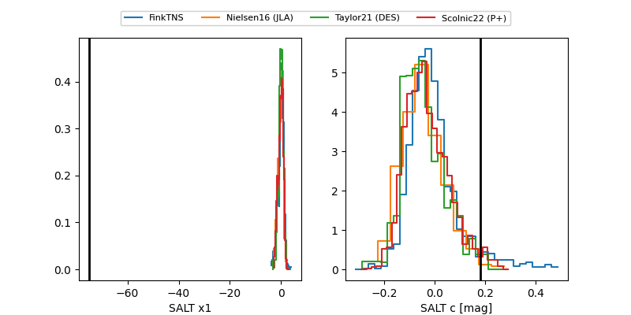

FINK: ZTF25abqzhzj
Lasair: ZTF25abqzhzj
ALeRCE: ZTF25abqzhzj
TNS: 2025xum
YSE: 2025xum
ZTF25abqzhzj (ztf,fink)
2025xum (tns,yse)
equatorial (ra, dec) = (37.2050,+51.46030)
galactic (l, b) = (137.9859,-8.54255)

last ztfg=20.14, ztfr=19.40
1 ztfg, 2 ztfr detections